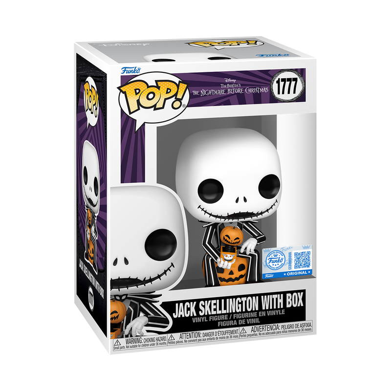
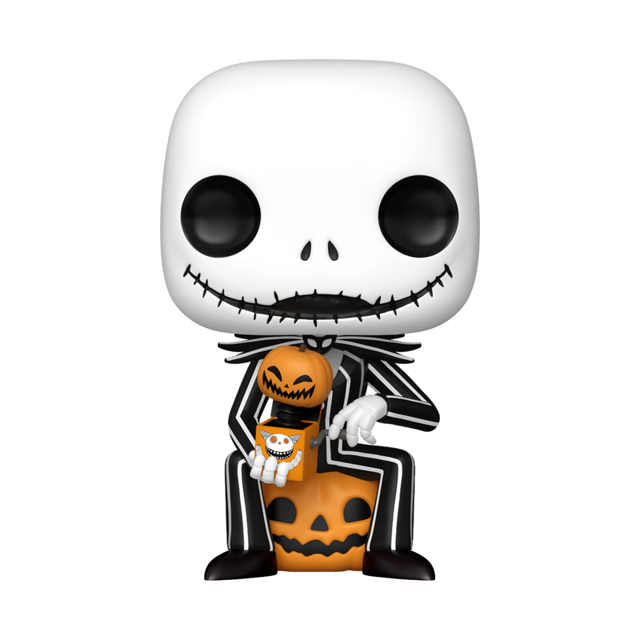

Descripción
La figura de Jack Skellington 1777 es un Funko Pop que representa al personaje principal de la película "El extraño mundo de Jack". Con su característico traje a rayas, su cabeza esquelética y las calabazas , logran captar la esencia del icónico personaje de Tim Burton.
Jack Skellington es conocido como el "Pumpkin king" y es el líder de Halloween Town.
Materiales
- Plástico vinilo y ABS
- Pintura no tóxica

Contexto
La figura de Jack Skellington 1777 es parte de la colección de Funko Pop, que se ha convertido en un fenómeno cultural. Los Funko Pop son figuras coleccionables que representan personajes de películas, series, videojuegos y más. La figura de Jack Skellington es especialmente popular entre los fanáticos de "El extraño mundo de Jack" y los coleccionistas de Funko Pop.